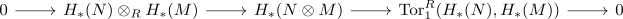
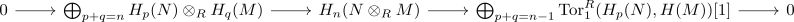
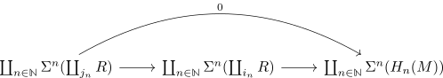
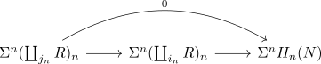
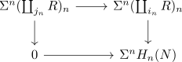
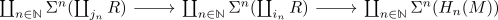
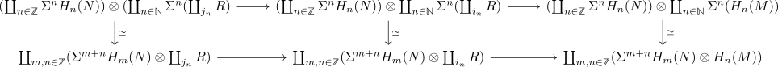
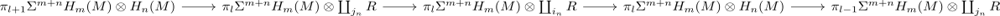
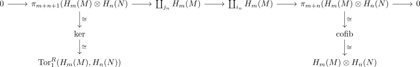

algebraic kunneth formula in the derived category of a hereditary ring
Warning
- not finished proof; todo
Proposition
Let $R$ be a hereditary ring, $M,N$ be objects in the derived category. Then there exists a a natural short exact sequence of graded modules

which splits, albeit not naturally.
An explicit description for each $n$ is given by

Proof
Observe that $M$ splits as $M \simeq \coprod_{n \in \mathbb{Z}} H_n(M)$ (cf. object in the derived category of a hereditary ring splits). Now choose a projective resolution $\coprod_{j_n} R \rightarrow \coprod_{i_n} R \rightarrow H_n(M)$ (cf. hereditary ring and projective resolution of length 2) which gives a cofiber sequence

To show that this is a cofiber sequnce, it suffices to observe that the composite is the zero morphism, as it is the coproduct of the composite

which lies in the shifted heart (so in category RMod)
Hence we may choose a commutative diagram

and thus there exists a comparison map $\mathrm{cofib} \rightarrow \Sigma^n H_n(N)$.
We may then pass to the long exact sequence homotopy groups in spectra where $\Sigma^n H_n(N)$ happens to fit into a long exact sequence. In particular, the Five-Lemma shows that the map $\mathrm{cofib} \rightarrow \Sigma^n H_n(N)$ is an equivalence on homotopy groups, so in particular also on spectra (cf. whitehead theorem for spectra).
Now we consider $M$ and tensor with the cofiber sequence

which gives a cofiber sequence

where the bottom row is equivalent, as $- \otimes -$ preserves colimits (coproducts) in both variables.
Now it suffices pass to long exact sequence homotopy groups which decomposes - as homotopy groups preserve coproducts - to a coproduct of long exact sequences

now $\pi_{l} \Sigma^{m+n} \coprod_{j_n} H_m(M) \simeq \pi_l(\Sigma^{m+n} \coprod_{j_n} H_m(M))$ as $R$ is the monoidal unit (and $- \otimes -$ preserves coproducts in both variables) and hence
so by some sandwhiched by zero object and isomorphism we get short exact seuqences

where the relevant homotopy groups of $H_m(M) \otimes H_n(N)$ identify with the kernel and cokernel in $\mathrm{Ab}$ - resp. the Tor term and ordinary tensor product.